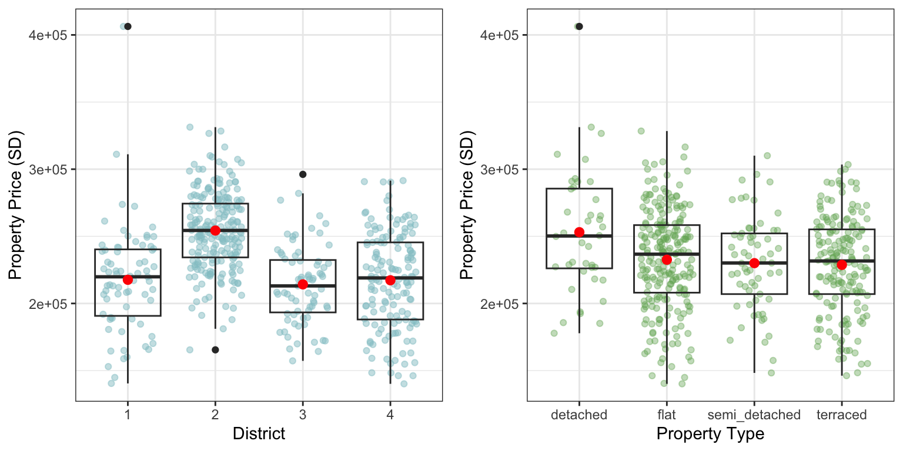
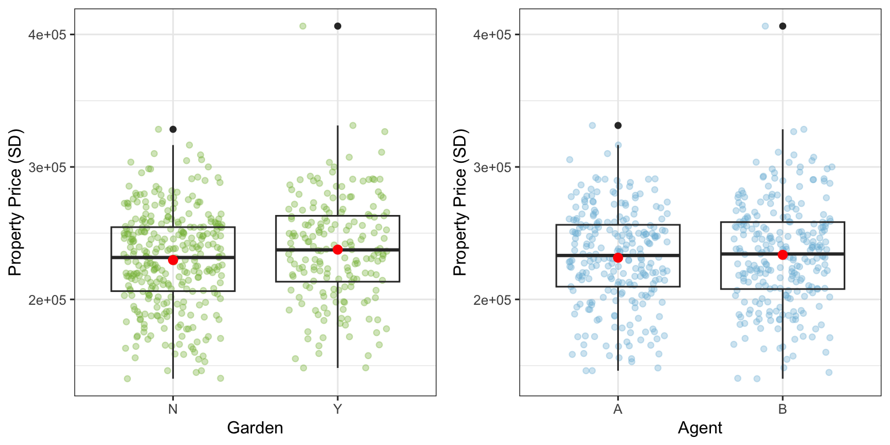
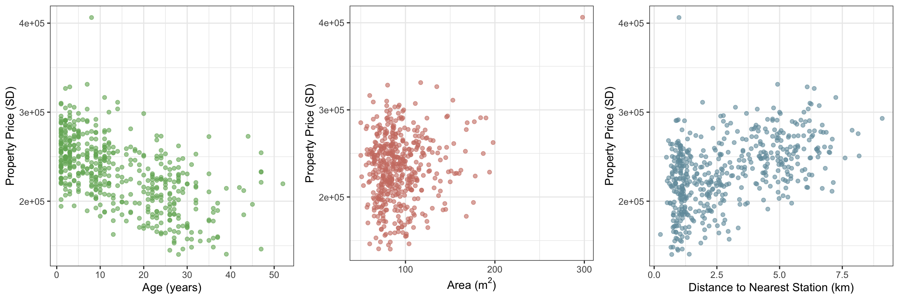
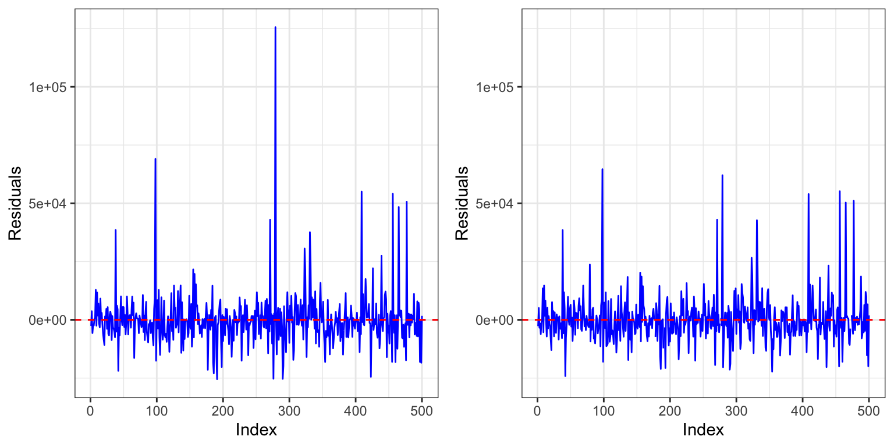
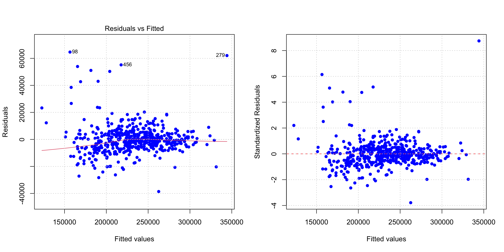
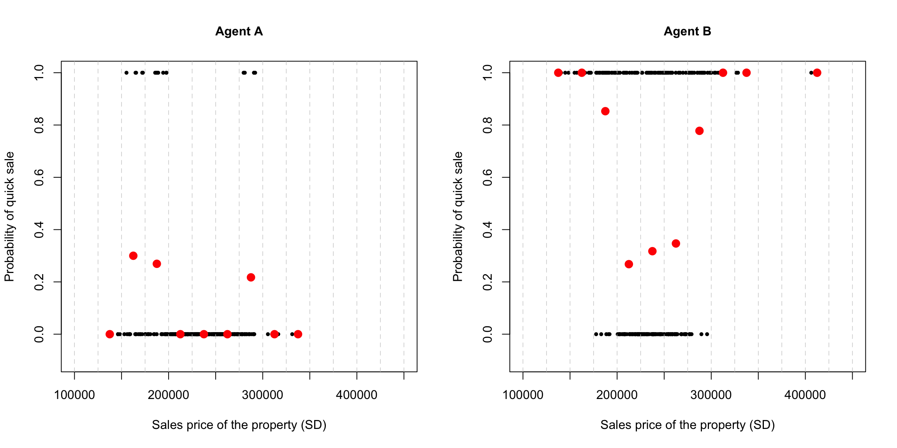
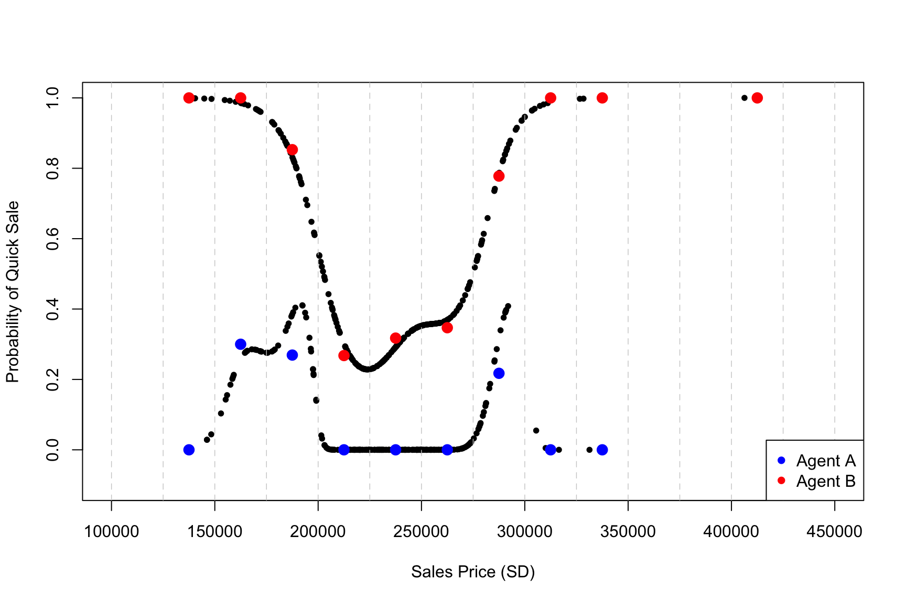
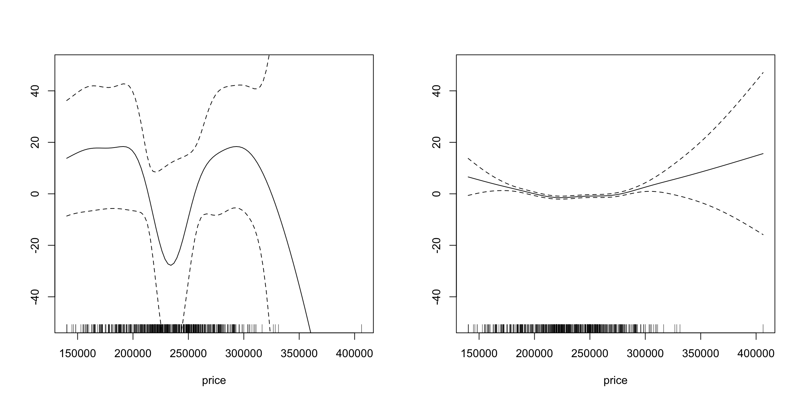

| Variable | Description |
|---|---|
| price | sales price of the property (measured in Statsland Dollars) |
| bedroom_count | number of bedrooms in the property |
| other_count | number of other rooms in the property |
| total_count | total number of rooms in the property |
| age | age of the property (in years) |
| district | district of the city where the property is located (district 1, 2, 3, 4) |
| type | type of property (either detached, semi_detached, terraced or flat) |
| garden | whether or not the property has access to a garden (Y/N) |
| area | total internal square footage of the property (measured in metres squared) |
| station | distance to the nearest train station (measured in km) |
| agent | estate agent who handled the sale (agent A, or B) |
Analysis of Property Prices and Sales Time
Part 1: Normal linear model - Analysis of property prices
Introduction to the data
A property development company in Statsville needs to analyze how property sales prices depend on various factors. They have provided the data on 500 properties sold in the last two years, containing 11 covariates with no data missing. The variables in the dataset provided are as follows:
The first variable price is the property sales price in Statsland Dollars (SD). It ranges from 140155 to 406305 SD, with a mean of 232590.4 SD. The remaining variables are potential covariates that could be used to build a model for price. In the following section, a closer investigation will be conducted on the relationships between each variable and price. Note that for boxplots presented later, the mean property sales price in each sub-category are indicated by the red dots in each plot.

The variables bedroom_count, other_count, and total_count represent the number of bedrooms, the number of rooms other than bedrooms, and the total number of rooms in the property. From Figure 1, we can observe that the property sales prices generally tend to increase with all three variables. In Figure 1 (right), there is a slight violation of the overall trend when total room number equals to 11. However, we only have 1 sample of sales price under this circumstance, and thus should not raise any concerns.
It is worth noting that the trends in these plots appear to be highly similar; the total number of rooms is the sum of the number of bedrooms and other rooms. This could potentially raise collinearity issues in the model building process in the future.

Figure 2 (left) shows the sales price of property located in different districts. It is notable that the mean sales price of property in district 2 is higher than that in other districts, with 254298.21 SD. Property sales prices in other districts share a similar mean at around 216,000 SD. Furthermore, most properties sold were located in district 2 (212 out of 500). Detached houses appear to be sold for a higher price than others, with a mean difference of 22635.85 SD.
As shown in Figure 3, property sales prices are analyzed based on the availability of garden and the estate agent who handled the sale. In both graphs, there are no significant differences in the mean and the range of prices between the two sub-categories. Therefore, accessibility to a garden and choice of the estate agent do not appear to influence property prices significantly.

The three scatterplots in Figure 4 illustrate the sales prices of properties that have different ages (in years), areas (in \(m^2\)), and distance to the nearest station (in km). Figure 4 (left) indicates a slightly negative correlation between sales price and age of the property. This is sensible as older property tends to be cheaper. No obvious trend has been demonstrated in Figure 4 (middle), suggesting that the area of the property does not significantly impact the sales price itself. Yet further investigations may be needed. Figure 4 (right) indicates a positive correlation between sales price and distance to the nearest station, which seems counter-intuitive. Further investigations are required to determine the relationship between property sales price and these variables.

Additionally, there exists an influential observation in the dataset, i.e., the data point with the maximum property price: 406305 SD. This point stands out from the main bulk of the data, suggesting its potential influence on the least squares line.
In conclusion, the initial findings suggest that sales price of a property could be potentially influenced by: bedroom_count, other_count, total_count, district, type, age, station, and area. Interactions among the covariates are also worth exploring, as unmentioned covariates might significantly influence outcomes as well. Therefore, all variables analyzed above should be accounted for when constructing a statistical model for property sales prices.
Model building
To establish a basic understanding of relationship between the response variable and the covariates, we first build a full model using all the covariates provided in the data set. However, instead of letting R automatically treat the district variable as a numeric variable, we manually convert it into a categorical data. Hence, we obtain our first model as shown below.
Call:
lm(formula = price ~ . - district + as.factor(district), data = prices)
Residuals:
Min 1Q Median 3Q Max
-25490 -5236 -814 3043 125602
Coefficients: (1 not defined because of singularities)
Estimate Std. Error t value Pr(>|t|)
(Intercept) 149983.86 6415.57 23.378 < 2e-16 ***
bedroom_count 14592.83 634.00 23.017 < 2e-16 ***
other_count 6171.44 663.93 9.295 < 2e-16 ***
total_count NA NA NA NA
age -1872.76 46.36 -40.396 < 2e-16 ***
typeflat 1197.63 3603.07 0.332 0.740
typesemi_detached 3519.61 3093.67 1.138 0.256
typeterraced 406.77 2902.95 0.140 0.889
gardenY 9669.03 1404.02 6.887 1.77e-11 ***
area 351.27 32.99 10.649 < 2e-16 ***
station 5165.98 570.60 9.054 < 2e-16 ***
agentB -695.35 1058.43 -0.657 0.512
as.factor(district)2 20769.50 2521.21 8.238 1.64e-15 ***
as.factor(district)3 -13643.11 2039.93 -6.688 6.23e-11 ***
as.factor(district)4 1717.50 1733.29 0.991 0.322
---
Signif. codes: 0 '***' 0.001 '**' 0.01 '*' 0.05 '.' 0.1 ' ' 1
Residual standard error: 11710 on 486 degrees of freedom
Multiple R-squared: 0.9066, Adjusted R-squared: 0.9041
F-statistic: 362.9 on 13 and 486 DF, p-value: < 2.2e-16However, as we can see from the model summary, covariates such as total_count, type, and agent are all insignificant. It is noticeable that collinearity exists between bedroom_count, other_count, and total_count as the value of the third variable can be obtained by adding up the corresponding values of the first two variables. Therefore, we need to exclude one of the variables to make the model valid. Considering the importance of bedroom_count and total_count contributing to the house price, we choose to exclude the variable other_count. We also exclude the variables type and agent as they do not show any significance in the normal regression model. The updated model is as shown below.
Call:
lm(formula = price ~ . - district + as.factor(district) - other_count -
agent - type, data = prices)
Residuals:
Min 1Q Median 3Q Max
-25862 -5221 -876 3528 126360
Coefficients:
Estimate Std. Error t value Pr(>|t|)
(Intercept) 151720.71 3209.61 47.271 < 2e-16 ***
bedroom_count 8315.70 1157.82 7.182 2.57e-12 ***
total_count 6218.26 660.87 9.409 < 2e-16 ***
age -1872.84 46.14 -40.587 < 2e-16 ***
gardenY 9989.89 1216.66 8.211 1.96e-15 ***
area 339.33 22.19 15.294 < 2e-16 ***
station 5179.20 569.58 9.093 < 2e-16 ***
as.factor(district)2 20586.43 2502.46 8.226 1.75e-15 ***
as.factor(district)3 -13597.25 2035.56 -6.680 6.51e-11 ***
as.factor(district)4 1757.60 1724.26 1.019 0.309
---
Signif. codes: 0 '***' 0.001 '**' 0.01 '*' 0.05 '.' 0.1 ' ' 1
Residual standard error: 11700 on 490 degrees of freedom
Multiple R-squared: 0.9059, Adjusted R-squared: 0.9041
F-statistic: 524 on 9 and 490 DF, p-value: < 2.2e-16Since this is a nested model of the first model we built, we can compare the two models using an F-test. From the below ANOVA table, we can conclude that our updated model outperforms the original model since the p-value is significantly larger than 0.05.
| Res.Df | RSS | Df | Sum of Sq | F | Pr(>F) |
|---|---|---|---|---|---|
| 490 | 6.71e+10 | NA | NA | NA | NA |
| 486 | 6.66e+10 | 4 | 5.27e+08 | 0.9609198 | 4.29e-01 |
Notice that all the covariates in our second model are significant but one – that is, the 4th district. Since other district variables are considered significant in our model, we believe it is possible to find a way to make this variable useful. It is intuitive that the housing price is related to both its area and its location. Therefore, we add an interaction between the area and the district and hence obtain our final model as presented below.
Call:
lm(formula = price ~ . - district + as.factor(district) * area -
other_count - agent - type, data = prices)
Residuals:
Min 1Q Median 3Q Max
-38586 -4976 -609 3714 64651
Coefficients:
Estimate Std. Error t value Pr(>|t|)
(Intercept) 121427.88 4456.87 27.245 < 2e-16 ***
bedroom_count 8464.27 1070.22 7.909 1.76e-14 ***
total_count 6069.05 610.67 9.938 < 2e-16 ***
age -1874.32 42.76 -43.835 < 2e-16 ***
gardenY 10771.00 1126.81 9.559 < 2e-16 ***
area 654.96 40.11 16.330 < 2e-16 ***
station 5241.75 527.05 9.945 < 2e-16 ***
as.factor(district)2 55136.75 5168.81 10.667 < 2e-16 ***
as.factor(district)3 31008.23 6182.36 5.016 7.42e-07 ***
as.factor(district)4 44070.79 5372.12 8.204 2.10e-15 ***
area:as.factor(district)2 -365.38 50.88 -7.182 2.60e-12 ***
area:as.factor(district)3 -459.92 60.19 -7.641 1.15e-13 ***
area:as.factor(district)4 -439.22 53.26 -8.247 1.52e-15 ***
---
Signif. codes: 0 '***' 0.001 '**' 0.01 '*' 0.05 '.' 0.1 ' ' 1
Residual standard error: 10810 on 487 degrees of freedom
Multiple R-squared: 0.9202, Adjusted R-squared: 0.9183
F-statistic: 468.2 on 12 and 487 DF, p-value: < 2.2e-16As can be seen from the model summary above, we have used most of the covariates in the data set, and all the covariates used in the final model are significant. As the ANOVA table shows below, by conducting another F-test, we observe a tiny p-value indicating that there is strong evidence that our final chosen model is preferred.
| Res.Df | RSS | Df | Sum of Sq | F | Pr(>F) |
|---|---|---|---|---|---|
| 490 | 6.71e+10 | NA | NA | NA | NA |
| 487 | 5.69e+10 | 3 | 1.02e+10 | 29.22832 | 2.16e-17 |
Model checking
- Model Fit. According to the model summary mentioned above, the adjusted R-squared of our final chosen model is \(0.9183\), indicating that roughly \(91.83\%\) of the variations in the property prices can be explained our model and suggesting a potentially good fit. We check the model fit of our final chosen model by plotting the its residuals. As can be seen from Figure 5, the range of the residuals of our final model has reduced to almost half of that of the original full model, indicating that the accuracy has improved to certain extent. Despite that, the residuals of our final model generally fluctuate between \(-25000\) and \(50000\) SD with a \(0\) mean, and most residuals are constraint within the range \(\pm 25000\) SD, which is roughly \(21.5\%\) of the mean property price in Statsville.

- Linearity and Homoscedasticity. We plot the residuals and the standardized residuals over the fitted values to check the linearity and homoscedasticity assumptions in our model. As can be seen from the plot on the left, despite the slight curvature demonstrated on the red LOESS regression line, indicating that we might need to take further investigations on certain terms, no severe violations of linearity has been shown. Furthermore, while there’s a slight increase in the spread of residuals for lower fitted values, the residuals generally appear relatively evenly distributed around 0, maintaining a constant spread and demonstrating evidence of homoscedasticity. As a result, we have justified our use of a normal linear model since both linearity and homoscedasticity assumptions are met, as required.

- Normality of the Errors. As can be seen from Figure 7 below, there’s a clear departure from the acceptable range (highlighted in light gray) of the QQ-line, demonstrating that the normality assumption of the errors is not met. However, it does not affect our use of a normal linear model, we will further elaborate on this and the method to alleviate it in the limitation analysis later.

Conclusion
In conclusion, according to our model, the sales prices of the properties on Statsville are related to various factors including the number of bedrooms, the number of rooms in total, property age, garden availability, total area, distance to nearest train station, and district location. In general, properties with a garden, more rooms, larger areas, and greater distance from the train station tend to be more expensive. On the other hand, demonstrated by the negative coefficient, the older the property, the cheaper it is. Furthermore, housing prices in District 2 are significantly higher compared to those in District 1, followed by District 4 and District 3. It is also worth noticing that the district location can also be investigated together with the area of the property. However, the additional change in the property price per unit change in the property area for properties in District 2, 3, and 4 is smaller that that of properties for District 1. Using these tendencies described in our model, we can approximate the sales price of the properties rather accurately.
Limitations and Potential Alleviation Strategies
To begin with, in order to get rid of collinearity and insignificant covariates, we choose not to include covariates such as agent and type; therefore, our model may not be as thorough and comprehensive. Secondly, even though our model roughly met the linearity and homoscedasticity assumptions, slight departures from both assumptions still exist, implying that further investigations on certain terms may be required. More importantly, as mentioned above, the normality of error components in the model has not yet been satisfied. While this does not affect the estimation of coefficients in a normal linear model, it can impact the validity of statistical tests and confidence intervals for various model components. Apart from that, more covariates could be included to create a better model for the price. For example, the number of schools within the neighborhood where the property is located. With a higher number of schools, the property could be more desirable due to the likelihood of accessing quality education. This covariate may also create new interaction terms with others. Nevertheless, considering the principle of parsimony and interpretability of the model, more statistical tests could be carried out to examine whether the new variables significantly explain the variation in the response variable.
Part 2: Generalised additive model - Analysis of sales times
Simple Exploratory Analysis and Model Selection
Now, we are required to develop either a generalized linear regression model (GLM) or a generalized additive regression model (GAM) for the variable quick_sale, where quick_sale indicates whether the property was sold within two months (with value 1) or in more than two months (with value 0). Based on the model, the aim is to choose an agent who will maximize the chance of a quick sale. The two covariates are:
\[\begin{cases} \text{Price: the sales price of the property in SD} \\ \text{Agent: the estate agent (A or B) who handled the sale} \end{cases}\]
To start with, a simple exploratory analysis can be carried for choosing an appropriate model. The plot below depicts the relationship between the probability of a quick sale and the property prices for agent A and B. Property prices are split into different bins and the proportion of quick sales in each interval is displayed by red dots (intervals with no red dots means no data is associated with this range).

Since we have a binary response variable, relating to the successes and failures of a quick sale, a Bernoulli distribution or a Binomial distribution with \(n=1\) is appropriate. Besides, both distributions belong to the exponential family, so it is sensible to construct a model using a GLM or GAM.
Within both agents, parametric functions that might model the relationship between the sales price of the property and the probability of a quick sale can hardly be identified. Therefore, it seems reasonable to take a non-parametric approach and thus use a generalized additive regression model. Furthermore, observing that the general pattern of the relationship between prices and the probability of quick sales differ between agents, an interaction term can be included in the model.
Combining the above considerations, the model for the variable quick_sale is a generalized additive regression model taking price, agent, and their interaction with a binomial family and a logit link function. A logit link can restrict the mean to between 0 and 1, since we are estimating the probability associated with each observation. A summary of the model output is shown as below:
Family: binomial
Link function: logit
Formula:
quick_sale ~ s(price, by = agent) + agent
Parametric coefficients:
Estimate Std. Error z value Pr(>|z|)
(Intercept) -18.71 11.94 -1.566 0.117
agentB 18.98 11.95 1.589 0.112
Approximate significance of smooth terms:
edf Ref.df Chi.sq p-value
s(price):agentA 7.517 7.936 7.14 0.485
s(price):agentB 4.656 5.618 42.00 <2e-16 ***
---
Signif. codes: 0 '***' 0.001 '**' 0.01 '*' 0.05 '.' 0.1 ' ' 1
R-sq.(adj) = 0.429 Deviance explained = 43.3%
UBRE = -0.25869 Scale est. = 1 n = 500Assessing the Model Fit
To assess the model fit, we plot the fitted values of the model versus the covariate price as shown below in Figure 7. There seems to be a reasonable alignment between the fitted probabilities and the previous empirical results while spotting some deviations at certain price ranges. Hence, the model fit is considered to be good.

Main features of the model
The plots of smooth terms tell the story of what the model is doing. The plot on the left shows how the price affects the estimated probability of a quick sale for Agent A. It shows that when the sales price is less than 200,000 SD or between 270,000 SD and 300,000 SD, higher-priced properties are more likely to sell quickly. The plot on the right illustrates that in agent B, when prices are below 225,000 SD, the probability is disproportional to the sales prices, while the positive relationship starts from property values greater than 250,000 SD.

Choice between agents
To choose which estate agent to employ to maximize the chance of a quick sale given that the property will be sold for 200,000 SD, a prediction from the model is displayed below:
| Agent A | Agent B | |
|---|---|---|
| fit | 0.0953505 | 0.5667283 |
| se.fit | 0.0938841 | 0.0796898 |
According to the result shown in Table 3, agent B is associated with a higher probability and a smaller standard error meaning less uncertainty. Therefore, the manager should employ Agent B to sell his property.
Total word count: 2375